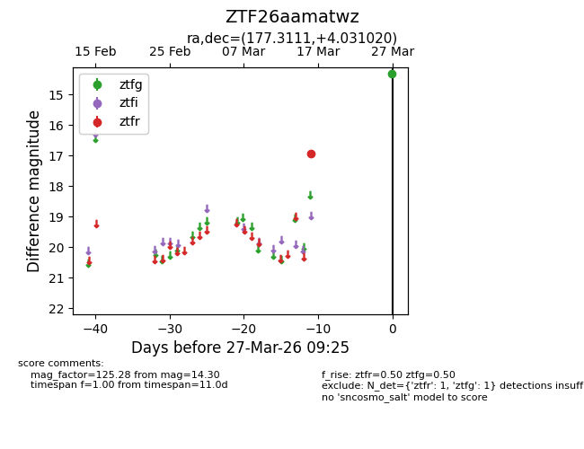
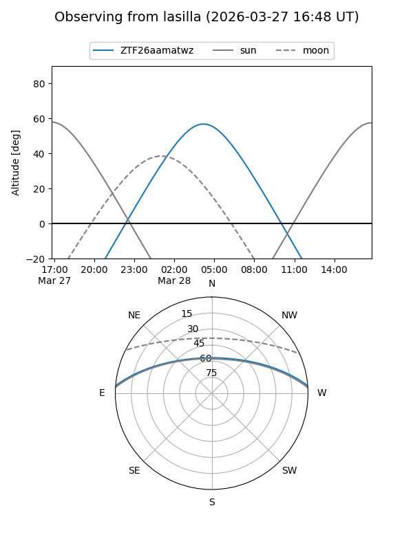
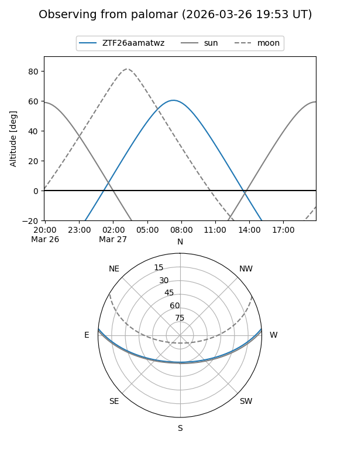
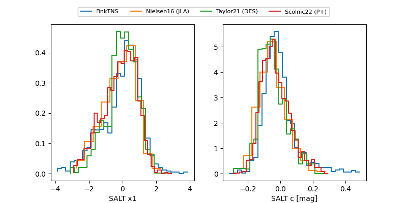

ZTF26aamatwz
Target ZTF26aamatwz at 2026-03-27 09:28
Aliases and brokers:
FINK: link
Lasair: link
ALeRCE: link
alt names
ZTF26aamatwz (ztf,fink_ztf)
Coordinates:
equatorial (ra, dec) = 177.3111,+4.03102
equatorial (HMS+DMS) = 11:49:14.66,+04:01:51.67
galactic (l, b) = (267.4883,+62.54228)
Flags:
Photometry:
last ztfg=14.30, ztfr=16.94
1 ztfg, 1 ztfr detections
Lightcurve

Visibility


Additional plots
